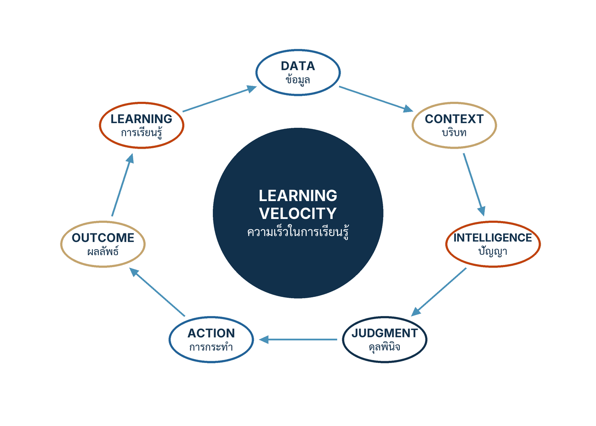

ในบทความนี้
- 1. อะไรที่ซื้อได้ในธุรกรรมเดียว และอะไรที่ซื้อไม่ได้
- 2. ห้าท่าของวงจร — Observe, Preserve, Compare, Change, Verify
- 3. เครื่องยนต์การเรียนรู้ และความเร็วในการเรียนรู้
- 4. Aurora Assurance — เมื่อจดหมายแปดหมื่นฉบับไม่ได้บอกอะไรเลย
- 5. หลักปฏิบัติห้าประการที่ทำให้วงจรเดินได้จริง
- 6. Learning loop canvas — 75 นาที สู่กฎบัตรหนึ่งหน้า
- 7. ตัวชี้วัดสำคัญสิบตัว และรูปแบบความล้มเหลวหกแบบ
- 8. ก้าวต่อไป — วงจรเดินได้เท่าที่หลักฐานอนุญาต
In this post
- 1. What you can buy in one transaction, and what you cannot
- 2. The five moves of the loop — Observe, Preserve, Compare, Change, Verify
- 3. The learning engine, and learning velocity
- 4. Aurora Assurance — when eighty thousand letters said nothing at all
- 5. The five operating principles that keep the loop turning
- 6. The learning loop canvas — 75 minutes to a one-page charter
- 7. Ten metrics that matter, and six failure patterns
- 8. The road ahead — the loop turns only as far as the evidence allows
🤔 โมเดล บริการ Cloud และชุด prompt ที่เขียนไว้ดีแล้ว — ทั้งหมดนี้คู่แข่งซื้อได้ในธุรกรรมเดียว แล้วอะไรคือสิ่งที่เขาซื้อไม่ได้?
ตอนที่แล้วของซีรีส์นี้ — #2 Cheaper Prediction — จบด้วยข้อสรุปว่าหน่วยของการเปลี่ยนผ่านไม่ใช่เครื่องมือ แต่คือการตัดสินใจ เมื่อการคาดการณ์ราคาถูกลง สิ่งที่แพงขึ้นคือดุลยพินิจ ข้อมูล และการกระทำที่ต่อจากคำทำนายนั้น แต่การรู้ว่าหน่วยคือการตัดสินใจยังไม่พอ เพราะการตัดสินใจที่ไม่มีใครย้อนกลับมาดูผลได้ ก็คือการเดาที่มีเอกสารประกอบสวยขึ้นเท่านั้นเอง
คำตอบหนึ่งบรรทัดของบทที่ 1 คือ สิ่งที่ซื้อไม่ได้ในธุรกรรมเดียวคือ วงจรการเรียนรู้ (learning loop) — ความสามารถที่จะเห็นสิ่งที่เกิดขึ้น เก็บหลักฐาน ปรับส่วนที่ถูกต้องของระบบ และยืนยันผลก่อนปล่อยรุ่นถัดไป[1] ที่เหลือของบทความนี้คือการแกะวงจรนั้นออกเป็นห้าท่า หลักปฏิบัติห้าข้อ เวิร์กช็อป 75 นาที และตัวชี้วัดสิบตัวที่บอกได้ว่าวงจรของคุณหมุนจริงหรือหมุนแต่ในสไลด์
1. อะไรที่ซื้อได้ในธุรกรรมเดียว และอะไรที่ซื้อไม่ได้
บทที่ 1 ของคู่มือเปิดด้วยประโยคเดียวที่วางเดิมพันไว้ทั้งบท[1]
"The durable advantage is not access to a model. It is the ability to convert operating experience into safer and more valuable behavior." — ความได้เปรียบที่ยั่งยืนไม่ใช่การเข้าถึงโมเดล แต่คือความสามารถในการเปลี่ยนประสบการณ์การใช้งานจริงให้กลายเป็นพฤติกรรมที่ปลอดภัยขึ้นและมีคุณค่ามากขึ้น
ฉบับภาษาไทยของบทเดียวกันขยายความไว้แบบนี้ และผมอยากให้อ่านช้า ๆ เพราะทุกคำในประโยคที่สองทำงานหมด[1]
"การเปลี่ยนผ่านด้วย AI ไม่ใช่การติดตั้งโมเดล แต่คือการสร้างระบบการเรียนรู้ขององค์กร ที่ทำให้การตัดสินใจดีขึ้นได้เร็วกว่าสภาพแวดล้อมที่เปลี่ยนไป ทั้งโมเดล นโยบาย พฤติกรรมลูกค้า ข้อมูล และภัยคุกคามล้วนไม่หยุดนิ่ง คู่แข่งอาจซื้อโมเดลและบริการ Cloud แบบเดียวกันได้ แต่ไม่สามารถซื้อความสามารถในการมองเห็นสิ่งที่เกิดขึ้น เก็บหลักฐาน ปรับส่วนที่ถูกต้องของระบบ และยืนยันผลก่อนปล่อยรุ่นถัดไปได้ในครั้งเดียว"
การเปลี่ยนผ่านองค์กรด้วย AI (AI transformation) จึงไม่ใช่โครงการจัดหา มันคือการสร้างความสามารถชนิดหนึ่งขึ้นมาในองค์กร และความสามารถชนิดนั้นมีคุณสมบัติที่นักกลยุทธ์ชอบเรียกว่า สะสมได้ — ยิ่งหมุนนาน ยิ่งได้เปรียบ เพราะสิ่งที่สะสมไม่ใช่จำนวน license แต่คือกรณีที่เคยพลาดแล้วถูกแปลงเป็นชุดทดสอบ นโยบายที่เคยคลุมเครือแล้วถูกเขียนใหม่ให้ตัดสินได้ และเส้นทางการทำงานที่เคยส่งต่อกันแบบเงียบ ๆ แล้วถูกทำให้เห็นได้
ทำไมคำว่า "ในครั้งเดียว" จึงเป็นหัวใจของประโยค
ประโยคของคู่มือไม่ได้บอกว่าคู่แข่งสร้างวงจรการเรียนรู้ไม่ได้ตลอดกาล มันบอกว่าเขาซื้อมันในธุรกรรมเดียวไม่ได้ — และนี่คือความต่างที่ผู้บริหารมักมองข้าม ลองแยกความสามารถทั้งสี่ในประโยคนั้นออกมาดูทีละอัน แล้วถามว่าแต่ละอันซื้อมาพร้อมสัญญาได้ไหม
มองเห็นสิ่งที่เกิดขึ้น ต้องการเครื่องมือวัดที่ฝังอยู่ในกระบวนงานจริง ไม่ใช่ dashboard ที่ต่อกับ log ของโมเดล การเห็นในความหมายนี้คือการเห็นผลลัพธ์ของกรณี — ลูกค้าได้คำตอบที่ถูกไหม ต้องโทรกลับหรือเปล่า ผู้ตรวจแก้อะไร — ซึ่งเป็นข้อมูลที่กระจายอยู่ในหลายระบบและมักไม่มีใครเป็นเจ้าของ
เก็บหลักฐาน ต้องการการตัดสินใจล่วงหน้าว่าจะเก็บอะไร นานแค่ไหน ใครเข้าถึงได้ และเก็บอย่างไรให้ยังใช้ได้เมื่อระบบเปลี่ยนรุ่น องค์กรจำนวนมากค้นพบตอนเกิดเหตุว่าตัวเองเก็บผลลัพธ์ไว้ แต่ไม่ได้เก็บบริบทที่ทำให้ผลลัพธ์นั้นเกิดขึ้น — และหลักฐานที่ประกอบเหตุการณ์ย้อนกลับไม่ได้ ก็ไม่ใช่หลักฐาน
ปรับส่วนที่ถูกต้องของระบบ ต้องการอำนาจข้ามหน่วยงาน เพราะ "ส่วนที่ถูกต้อง" มักไม่ใช่โมเดล แต่เป็นนโยบายที่กำกวม เป็นแบบฟอร์มที่ถามคำถามผิด หรือเป็นจุดส่งต่อที่ไม่มีใครรับผิดชอบ ทีมที่แก้ได้แค่ prompt จะแก้ prompt ทุกครั้ง ไม่ใช่เพราะวินิจฉัยผิด แต่เพราะนั่นคือสิ่งเดียวที่เขามีอำนาจแตะ
ยืนยันผลก่อนปล่อยรุ่นถัดไป ต้องการวินัยการปล่อยของ ซึ่งเป็นเรื่องวัฒนธรรมพอ ๆ กับเรื่องเทคนิค องค์กรที่เคยชินกับการปล่อยแล้วค่อยดู จะรู้สึกว่าการตั้งเกณฑ์ล่วงหน้าเป็นการถ่วงงาน จนกว่าจะเจอเหตุการณ์แรกที่ทำให้เข้าใจว่าเกณฑ์นั้นคือสิ่งที่ทำให้ยังกล้าปล่อยของอยู่
ทั้งสี่อย่างเป็นความสามารถขององค์กร ไม่ใช่ฟีเจอร์ของซอฟต์แวร์ ซื้อเครื่องมือมาช่วยได้ แต่ซื้อความสามารถไม่ได้ นี่คือเหตุผลที่คู่มือนิยาม วงจรการเรียนรู้ (learning loop) ว่าเป็น "วงจรปิดที่เปลี่ยนข้อมูลเป็นการตัดสินใจ การลงมือทำ ผลลัพธ์ที่สังเกตได้ หลักฐาน และการปรับปรุงรอบถัดไป"[1] — คำสำคัญคือ ปิด ถ้าปลายทางไม่วิ่งกลับมาที่ต้นทาง สิ่งที่คุณมีคือท่อ ไม่ใช่วงจร
2. ห้าท่าของวงจร — Observe, Preserve, Compare, Change, Verify
คู่มือไม่ได้ปล่อยให้คำว่า "วงจรการเรียนรู้" ลอยอยู่เป็นคำสวย ๆ แต่ระบุองค์ประกอบไว้ครบทั้งห้าท่า[1]
"วงจรการเรียนรู้ที่ใช้งานได้จริงมีห้าท่า ได้แก่ สังเกตสิ่งที่เกิดขึ้น เก็บบริบท เส้นทาง การกระทำ และผลลัพธ์ เปรียบเทียบผลจริงกับความคาดหมายที่ประกาศไว้ ปรับ Workflow ข้อมูล ตัวควบคุม โมเดล หรือบทบาทมนุษย์ แล้วตรวจสอบกับกรณีที่เป็นตัวแทน กรณีซ่อน และกรณีรุนแรงก่อนเพิ่มการเปิดรับ"
ห้าท่านี้ดูเรียบง่ายจนหลอกตา ผมจึงอยากแยกทีละท่าและชี้จุดที่องค์กรไทยที่ผมเคยคุยด้วยมักตกม้าตายกัน
Observe — สังเกตสิ่งที่เกิดขึ้น คำที่ต้องเน้นคือ "ที่เกิดขึ้น" ไม่ใช่ "ที่สาธิต" สิ่งที่ต้องสังเกตคือพฤติกรรมของระบบตอนเจอกรณีจริงซึ่งมีความหลากหลายที่เดโมไม่มีวันแสดงได้ การสังเกตที่ใช้ได้ต้องลงถึงระดับกรณี ไม่ใช่ค่าเฉลี่ยรายเดือน เพราะค่าเฉลี่ยคือเครื่องมือกลบปัญหาที่มีประสิทธิภาพที่สุดที่มนุษย์เคยประดิษฐ์ขึ้น
Preserve — เก็บบริบท เส้นทาง การกระทำ และผลลัพธ์ สี่อย่างนี้ต้องครบ เก็บแค่ผลลัพธ์แปลว่ารู้ว่าผิด แต่ไม่รู้ว่าทำไม เก็บแค่บริบทแปลว่ารู้ว่าระบบเห็นอะไร แต่ไม่รู้ว่ามันเดินทางไหนต่อ คำว่า "เส้นทาง" ในที่นี้คือ Trace — ลำดับขั้นที่ระบบเดินผ่านจริง รวมถึงเครื่องมือที่เรียกและข้อมูลที่ค้นคืนมา ซึ่งเป็นสิ่งที่ต้องออกแบบให้เก็บตั้งแต่วันแรก ไม่ใช่ต่อเติมทีหลังตอนเกิดเหตุ
Compare — เปรียบเทียบผลจริงกับความคาดหมายที่ประกาศไว้ คำที่ทำงานหนักที่สุดคือ "ประกาศไว้" ความคาดหมายที่เขียนหลังเห็นผลแล้วไม่ใช่ความคาดหมาย มันคือคำอธิบาย การประกาศล่วงหน้าว่า "เราคาดว่าอัตราการโทรกลับในกลุ่มกรณีนี้จะลดจาก X เหลือ Y ภายในสี่สัปดาห์ และถ้าไม่ถึงเราจะทำอย่างนี้" คือสิ่งที่แยกการทดลองออกจากการเล่าเรื่อง
Change — ปรับ Workflow ข้อมูล ตัวควบคุม โมเดล หรือบทบาทมนุษย์ สังเกตลำดับที่คู่มือเขียน: โมเดลมาเป็นลำดับที่สี่จากห้า ไม่ใช่ลำดับแรก นี่ไม่ใช่อุบัติเหตุทางการเรียบเรียง แต่เป็นการจัดลำดับความน่าจะเป็นตามที่พบจริง — ปัญหาที่ดูเหมือนปัญหาโมเดล ส่วนใหญ่เป็นปัญหาการออกแบบกระบวนงานหรือคุณภาพบริบทที่ป้อนเข้าไป
Verify — ตรวจสอบกับกรณีที่เป็นตัวแทน กรณีซ่อน และกรณีรุนแรง ก่อนเพิ่มการเปิดรับ สามชนิดนี้ตอบคำถามคนละข้อ กรณีที่เป็นตัวแทนตอบว่า "งานปกติยังดีอยู่ไหม" กรณีซ่อนตอบว่า "เราเผลอปรับระบบให้เก่งเฉพาะข้อสอบที่เห็นหรือเปล่า" และกรณีรุนแรงตอบว่า "ตอนที่มันพลาด มันพลาดแรงแค่ไหน" วรรคสุดท้าย "ก่อนเพิ่มการเปิดรับ" คือกฎการปล่อยของ: การขยายผลเป็นรางวัลของหลักฐาน ไม่ใช่ของกำหนดการ
สินทรัพย์ปฏิบัติการเจ็ดชนิด ไม่ใช่เศษซากของโครงการ
ทันทีหลังห้าท่า คู่มือทิ้งประโยคที่ผมคิดว่าเป็นประโยคที่มีต้นทุนสูงที่สุดในบทนี้ ถ้าใครทำตามจริง[1]
"Prompt แม่แบบบริบท รุ่นของคลังความรู้ Tool Schema ชุดทดสอบ Threshold และ Release Manifest จึงต้องถูกดูแลเสมือนสินทรัพย์ปฏิบัติการ"
เจ็ดชนิดนี้คือสิ่งที่ในโครงการนำร่องส่วนใหญ่ถูกปฏิบัติเหมือนเศษซากของโครงการ — อยู่ในเครื่องของคนที่ทำ อยู่ในแชตของทีม อยู่ในไฟล์ชื่อ final_v3_ใช้อันนี้.txt และหายไปพร้อมกับคนที่ลาออก ถ้าจะให้มันเป็น สินทรัพย์ปฏิบัติการ จริง แต่ละชิ้นต้องตอบสามคำถามให้ได้: ใครเป็นเจ้าของ เวอร์ชันเปลี่ยนเมื่อไร และอยู่ที่ไหน
ตารางข้างล่างเป็นแบบฟอร์มของบทความนี้ ไม่ใช่ของคู่มือ — คู่มือระบุชื่อสินทรัพย์ทั้งเจ็ดไว้ แต่ไม่ได้กำหนดเจ้าของ เวอร์ชัน หรือที่อยู่ให้ ผมเติมสามคอลัมน์นั้นเข้าไปเพราะเป็นสามคำถามที่ทำให้คำว่า "สินทรัพย์" มีผลบังคับ ให้ใช้เป็นจุดตั้งต้นแล้วแก้ให้ตรงกับโครงสร้างขององค์กรคุณ
| Operating asset | Owner | Version bumps when | Where it lives |
|---|---|---|---|
| Prompt | เจ้าของกระบวนงาน ร่วมกับผู้ดูแลผลิตภัณฑ์ | ทุกครั้งที่ถ้อยคำเปลี่ยนจนพฤติกรรมเปลี่ยน ไม่ใช่เฉพาะตอนแก้ครั้งใหญ่ | ที่เก็บโค้ดพร้อมประวัติการแก้ ไม่ใช่กล่องข้อความในหน้าจอตั้งค่า |
| แม่แบบบริบท (context template) | ทีมข้อมูลหรือวิศวกรรม | เมื่อเปลี่ยนว่าจะใส่ข้อมูลชนิดใดเข้าไป หรือเปลี่ยนลำดับความสำคัญ | ที่เดียวกับ Prompt เพราะสองอย่างนี้เปลี่ยนพฤติกรรมพอ ๆ กัน |
| รุ่นของคลังความรู้ (corpus snapshot) | เจ้าของข้อมูลต้นทาง | ทุกครั้งที่เอกสารต้นทางถูกเพิ่ม ลบ หรือแก้เนื้อหาที่มีผลต่อคำตอบ | ที่เก็บที่ระบุรุ่นได้และย้อนไปดูรุ่นเก่าได้ |
| Tool Schema | ทีมวิศวกรรมที่เป็นเจ้าของเครื่องมือนั้น | เมื่อพารามิเตอร์ ขอบเขตค่า หรือผลข้างเคียงของเครื่องมือเปลี่ยน | ทะเบียนเครื่องมือกลาง ไม่ใช่กระจายอยู่ในโค้ดของแต่ละทีม |
| ชุดทดสอบ (evaluation cases) | เจ้าของวงจร | ทุกครั้งที่มีกรณีพลาดใหม่ถูกแปลงเป็นเคส และทุกครั้งที่ถอดเคสเก่าออก | ที่เก็บเดียวกับโค้ด รันอัตโนมัติทุกครั้งก่อนปล่อย |
| Threshold | ตัวแทนความเสี่ยง ร่วมกับเจ้าของกระบวนงาน | เมื่อระดับผลกระทบเปลี่ยน หรือเมื่อมีหลักฐานพอจะขยับเกณฑ์ | ในกฎบัตรวงจร และในโค้ดของด่านอนุมัติ ให้ตรงกันเสมอ |
| Release Manifest | ผู้นำผลิตภัณฑ์ | ทุกครั้งที่ปล่อย เพราะมันคือบันทึกว่ารุ่นนี้ประกอบด้วยอะไรบ้าง | ผูกกับรุ่นที่ปล่อยจริง เรียกดูย้อนหลังได้พร้อม Trace |
ถ้าคุณกรอกตารางนี้แล้วพบว่าคอลัมน์ Owner มีชื่อเดียวกันทั้งเจ็ดแถว นั่นไม่ใช่ความเรียบร้อย นั่นคือคอขวด และถ้าคอลัมน์ Where it lives มีคำว่า "อยู่กับทีม" มากกว่าสองแถว แปลว่าองค์กรของคุณยังเรียนรู้ในระดับบุคคล ไม่ใช่ระดับองค์กร
3. เครื่องยนต์การเรียนรู้ และความเร็วในการเรียนรู้
ถ้าจะวาดวงจรการเรียนรู้ออกมาเป็นภาพเดียว ภาพนั้นควรมีหน้าตาแบบนี้ — เจ็ดจุดที่ต่อกันเป็นวง โดยมีมาตรวัดอยู่ตรงกลาง ไม่ใช่มีโมเดลอยู่ตรงกลาง
{kind=link}

ห่วงโซ่เจ็ดขั้นนี้มาจากกลยุทธ์ประโยคเดียวของคู่มือ ซึ่งผมยกมาแล้วในตอน #1 Six Layers และจะยกซ้ำอีกหลายครั้งตลอดซีรีส์ เพราะมันคือประโยคที่ทั้งเล่มเดินตาม[1]
"สร้างความสามารถขององค์กรในการเปลี่ยนข้อมูลเป็นบริบท บริบทเป็นปัญญา ปัญญาเป็นดุลยพินิจ ดุลยพินิจเป็นการกระทำที่ได้รับอนุญาต การกระทำเป็นผลลัพธ์ที่สังเกตได้ และผลลัพธ์เป็นการเรียนรู้ที่ตรวจสอบได้ เร็วกว่าสภาพแวดล้อมที่เปลี่ยนไป"
วรรคสุดท้ายคือสิ่งที่ทำให้ห่วงโซ่นี้เป็นวง ไม่ใช่เส้น และวรรคนั้นมีชื่อเรียกของมันเอง คู่มือนิยาม ความเร็วในการเรียนรู้ (learning velocity) ไว้ว่า "ความเร็วที่องค์กรเปลี่ยนหลักฐานจากผลลัพธ์จริงให้เป็นการตัดสินใจ กระบวนงาน มาตรการควบคุม และความรู้ที่ดีขึ้นและนำกลับมาใช้ได้"[1]
อ่านนิยามนี้แล้วจะเห็นว่ามันไม่ใช่ตัวชี้วัดของโมเดลเลยแม้แต่น้อย ปลายทางของมันคือสี่อย่าง — การตัดสินใจ กระบวนงาน มาตรการควบคุม และความรู้ที่ใช้ซ้ำได้ — ซึ่งไม่มีอันไหนที่วัดได้จากหน้าจอ evaluation ของโมเดล องค์กรที่วัดแต่ความแม่นยำจึงมักตอบไม่ได้ว่าตัวเองเรียนรู้เร็วขึ้นหรือเปล่า เพราะวัดผิดตัวมาตั้งแต่ต้น
ทำไมการเรียนรู้จึงหยุดอยู่ที่การปรับโมเดลไม่ได้
คู่มืออ้างงาน r8 ของผมเองในประเด็นนี้ เป็นเอกสารที่ผู้เขียนจัดส่งให้โครงการและยังไม่ตีพิมพ์ จึงไม่มี URL ให้ลิงก์[2] ข้อเสนอมีอยู่ว่า เมื่อผลจากโมเดลมีทั้งอำนาจสูงและเป็นองค์ประกอบที่ขาดไม่ได้สำหรับงานที่ประกาศไว้ ภาระการรับรองความถูกต้องต้องกระจายไปยัง Boundary รอบโมเดล ไม่ใช่ฝากไว้กับตัวโมเดล
แปลเป็นภาษาองค์กรได้ว่า ถ้าคำตอบของ AI คือสิ่งที่คนใช้ตัดสินใจจริง และงานนั้นทำต่อไม่ได้ถ้าไม่มีมัน การเรียนรู้จะครอบคลุมแค่การปรับโมเดลไม่ได้ ระบบการตัดสินใจทั้งระบบต้องดีขึ้น — ตั้งแต่ข้อมูลที่ป้อนเข้า นโยบายที่ใช้ตัดสิน ตัวควบคุมก่อนเกิดผล ไปจนถึงบทบาทของคนที่อนุมัติ ซึ่งเป็นเหตุผลว่าทำไมท่าที่สี่ของวงจร (Change) ถึงลิสต์โมเดลไว้เป็นลำดับที่สี่
วินัยของวงจรมีกรอบสากลรองรับ แต่กรอบไม่ได้รับประกันผลตอบแทน
ประเด็นนี้คู่มือระบุแหล่งอ้างอิงไว้สองแหล่ง และผมตรวจสถานะทั้งคู่ใหม่ในวันที่เขียนบทความนี้
NIST เผยแพร่ AI Risk Management Framework (AI RMF 1.0) เมื่อ 26 มกราคม 2023 และ ณ วันที่ 5 กันยายน 2569 ยังคงเป็นรุ่น 1.0 เป็นกรอบโดยสมัครใจ และไม่ใช่การรับรอง[3] แกนกลางของกรอบนี้คือสี่ฟังก์ชัน GOVERN, MAP, MEASURE, MANAGE โดย GOVERN ใช้กับทุกขั้นตอนของการบริหารความเสี่ยง ส่วน MAP, MEASURE และ MANAGE ใช้กับบริบทเฉพาะของระบบและกับแต่ละช่วงของวงจรชีวิต และเอกสารเขียนกำกับไว้เองด้วยว่า "Actions do not constitute a checklist, nor are they necessarily an ordered set of steps" — การกระทำเหล่านี้ไม่ใช่ checklist และไม่จำเป็นต้องเรียงตามลำดับ[3]
ฝั่งมาตรฐาน ISO/IEC 42001:2023 (Information technology — Artificial intelligence — Management system) มีวันเผยแพร่ธันวาคม 2023 และเมื่อตรวจสอบวันที่ 5 กันยายน 2569 ยังเป็น Edition 1 สถานะ Published ที่ระยะ 60.60[4] คำอธิบายสาธารณะของ ISO ระบุว่ามาตรฐานนี้กำหนดข้อกำหนดสำหรับการจัดตั้ง นำไปใช้ ธำรงรักษา และปรับปรุงอย่างต่อเนื่องซึ่งระบบการจัดการปัญญาประดิษฐ์ (AI Management System) ภายในองค์กร[4] คำว่า "ปรับปรุงอย่างต่อเนื่อง" นั่นแหละคือวงจร ในภาษาของระบบการจัดการ
แต่คู่มือปิดย่อหน้านี้ด้วยประโยคที่ผมอยากให้ทุกคนจำไว้ก่อนเอาสองชื่อนี้ไปใส่สไลด์[1]
"แต่กรอบเหล่านี้ไม่ได้ให้ประกันผลตอบแทนทางธุรกิจในอัตราใด"
บรรพบุรุษทางความคิดของคำว่า "ปรับส่วนที่ถูกต้อง"
ตรงนี้ผมขอเติมบริบททางประวัติศาสตร์ที่คู่มือไม่ได้อ้างไว้ ถือเป็นกรอบของบทความนี้เอง ไม่ใช่การอ้างอิงของหนังสือ: แนวคิดที่ว่าการแก้ปัญหาที่ดีต้องกล้ากลับไปตั้งคำถามกับกฎที่ผลิตปัญหานั้น ไม่ใช่แค่แก้ค่าให้กลับเข้าเกณฑ์ มีชื่อเรียกมานานแล้วว่า double-loop learning ซึ่ง Chris Argyris เขียนไว้ใน Harvard Business Review ตั้งแต่เดือนกันยายน 1977[6]
สิบสี่ปีถัดมา Argyris กลับมาเขียนบทความที่คนอ้างถึงมากกว่า คือ "Teaching Smart People How to Learn" (พฤษภาคม–มิถุนายน 1991) และย่อหน้าเปิดของมันยังอ่านได้เหมือนเขียนเมื่อวาน[5]
"…those members of the organization that many assume to be the best at learning are, in fact, not very good at it. I am talking about the well-educated, high-powered, high-commitment professionals who occupy key leadership positions in the modern corporation."
ผมยกมาเพราะมันอธิบายอาการที่พบบ่อยที่สุดในโครงการ AI ขององค์กรใหญ่ได้ตรงที่สุด — ทีมที่เก่งที่สุด มีการศึกษาสูงที่สุด และทุ่มเทที่สุด มักเป็นทีมที่ปรับ prompt ซ้ำ ๆ ได้อย่างชำนาญ แต่ไม่กลับไปถามว่าทำไมกระบวนงานถึงพาให้ระบบต้องเดาตั้งแต่แรก การแก้ให้กลับเข้าเกณฑ์เดิมนั้นทำได้เร็วและได้ความรู้สึกว่าคืบหน้า ส่วนการกลับไปแก้กฎที่ผลิตปัญหานั้นช้า ขัดใจคน และมักต้องข้ามหน่วยงาน — ท่าที่สี่ของวงจรจึงเป็นท่าที่ยากที่สุด ไม่ใช่เพราะเทคนิค แต่เพราะการเมืองภายใน
4. Aurora Assurance — เมื่อจดหมายแปดหมื่นฉบับไม่ได้บอกอะไรเลย
คู่มือใช้กรณีตัวอย่างชื่อ Aurora Assurance (กรณีสมมติจากหนังสือ) เป็นภาพประกอบของทั้งบท และผมคิดว่ามันคือกรณีศึกษาที่มีประโยชน์ที่สุดในเล่ม เพราะมันไม่ได้เล่าเรื่องความสำเร็จ แต่เล่าเรื่องการเปลี่ยนคำถาม
ระยะแรก Aurora นับจดหมายสินไหมที่ AI ช่วยเขียนได้ แปดหมื่นฉบับ เป็นความสำเร็จ ตัวเลขนี้สวยและรายงานง่าย แต่มันคือตัวชี้วัดกิจกรรม ไม่ใช่ผลลัพธ์ — มันบอกว่าระบบทำงานเยอะ ไม่ได้บอกว่าลูกค้าได้อะไรขึ้นมา และสิ่งที่เกิดขึ้นจริงก็พิสูจน์เรื่องนั้น: ลูกค้ายังโทรกลับมาถามว่าอะไรไม่คุ้มครอง ส่วนผู้พิจารณาสินไหมก็แอบเขียนกรณียาก ๆ ใหม่เองแบบเงียบ ๆ โดยไม่มีการบันทึกไว้ที่ไหนเลย
สังเกตอาการที่สองให้ดี เพราะมันคืออาการที่อันตรายกว่า ตัวเลข "แปดหมื่นฉบับ" ยังนับต่อไปได้เรื่อย ๆ ทั้งที่ส่วนหนึ่งของงานนั้นถูกมนุษย์เขียนใหม่ไปแล้ว — และไม่มีใครรู้ว่ามากแค่ไหน เพราะการแก้ของผู้ตรวจไม่ได้ถูกเก็บเป็นข้อมูล องค์กรที่เก็บแต่ตัวเลขกิจกรรมจะมองไม่เห็นอาการนี้ตลอดกาล
Aurora จึงทิ้งเป้าหมายเชิงกิจกรรมและแทนที่ด้วยผลลัพธ์สามข้อ ได้แก่ อธิบายถูกต้องตั้งแต่การติดต่อครั้งแรก ลดสายโทรกลับที่หลีกเลี่ยงได้ และไม่ปล่อยข้อความคุ้มครองที่ไม่มีหลักฐานรองรับ ทั้งสามข้อนี้มีคุณสมบัติร่วมกันอย่างหนึ่งคือ ลูกค้ารู้สึกได้ — ต่างจาก "จำนวนจดหมายที่ AI เขียน" ซึ่งไม่มีลูกค้าคนไหนสนใจ
แล้ว Aurora ก็เริ่มเก็บหลักฐาน: ข้อความอ้างอิงที่ระบบใช้ การแก้ของผู้ตรวจ ประเภทของกรณี ผลตัดสินสุดท้าย และการติดตามซ้ำจากลูกค้า ห้าอย่างนี้ตรงกับท่าที่สองของวงจรพอดี — บริบท เส้นทาง การกระทำ และผลลัพธ์ ครบ
การทบทวนรายสัปดาห์ (ซึ่งเป็นรอบของ Aurora ไม่ใช่รอบที่คู่มือแนะนำให้ทุกองค์กรใช้) พบสิ่งที่ค่าเฉลี่ยไม่มีวันเปิดเผย: ระบบทำงานได้ดีในกรณีกรมธรรม์เดียว แต่พลาดเมื่อสองกรมธรรม์เชื่อมกัน คู่มือไม่ได้ให้ตัวเลขใด ๆ กับกลุ่มกรณีนี้ ไม่มีอัตรา ไม่มีจำนวนเคส และผมจะไม่แต่งขึ้นมาให้ สิ่งที่สำคัญคือรูปร่างของการค้นพบ: ปัญหาไม่ได้กระจายทั่วทั้งงาน แต่กระจุกอยู่ในกลุ่มกรณีที่มีเงื่อนไขซ้อนกัน
สิ่งที่ Aurora ทำต่อคือส่วนที่ผมอยากให้ทุกทีมลอกไปใช้ — กลุ่มกรณีนั้นถูกส่งต่อให้ผู้เชี่ยวชาญ ถูกแปลงเป็นชุดทดสอบ และถูกใช้ปรับ Retrieval ก่อนขยายผล สามอย่างนี้คือท่าที่สาม สี่ และห้าเรียงกันในย่อหน้าเดียว และมันคือความต่างระหว่างองค์กรที่เจอปัญหาแล้วแก้ กับองค์กรที่เจอปัญหาแล้วเรียนรู้
| Move | What Aurora did | What it produced |
|---|---|---|
| Observe | เลิกนับจำนวนจดหมาย แล้วดูว่าลูกค้ายังต้องโทรกลับหรือไม่ และผู้ตรวจแก้อะไรบ้าง | เห็นอาการที่ตัวเลขกิจกรรมกลบไว้ คือการเขียนใหม่แบบไม่มีบันทึก |
| Preserve | เก็บข้อความอ้างอิง การแก้ของผู้ตรวจ ประเภทกรณี ผลตัดสิน และการติดตามซ้ำ | ชุดหลักฐานที่ประกอบเหตุการณ์ย้อนกลับได้ในระดับกรณี |
| Compare | ทบทวนรายสัปดาห์เทียบกับผลลัพธ์สามข้อที่ประกาศไว้ล่วงหน้า | พบว่าปัญหากระจุกที่กรณีสองกรมธรรม์ ไม่ได้กระจายทั่วงาน |
| Change | ส่งกลุ่มกรณีนั้นให้ผู้เชี่ยวชาญ และปรับ Retrieval ไม่ใช่ปรับ Prompt | แก้ที่ชั้นบริบท ซึ่งเป็นชั้นที่ผลิตปัญหาจริง |
| Verify | แปลงกรณีที่พลาดเป็นชุดทดสอบ แล้วค่อยขยายผลหลังจากนั้น | การขยายผลที่มีหลักฐานรองรับ ไม่ใช่การขยายผลตามกำหนดการ |
และประโยคปิดของกรณีนี้คือประโยคที่ผมคิดว่าคุ้มค่าทั้งบท: บทเรียนที่มีค่าที่สุดของ Aurora ไม่ใช่การค้นพบว่า AI เขียนแทนได้ตรงไหน แต่คือการค้นพบว่าจุดใดของกระบวนงานที่หลักฐานยังไม่พอจะปล่อยคำตอบออกไป
💡 มุมมองของผม: ประโยคนั้นกลับหัวคำถามที่องค์กรส่วนใหญ่ถามอยู่ แทนที่จะถามว่า "AI ทำอะไรแทนเราได้บ้าง" ให้ถามว่า "กระบวนงานของเราตรงไหนที่ตัดสินใจโดยไม่มีหลักฐานพอ" คำถามแรกได้ลิสต์ use case คำถามที่สองได้แผนที่ความเสี่ยง และแผนที่นั้นมีประโยชน์แม้ในวันที่คุณยังไม่ได้ใช้ AI เลย
5. หลักปฏิบัติห้าประการที่ทำให้วงจรเดินได้จริง
ห้าท่าเป็นโครงสร้าง ส่วน หลักปฏิบัติห้าประการ คือกฎที่ทำให้โครงสร้างนั้นไม่ถูกบิดกลับเป็นการรายงานผลแบบเดิม คู่มือเขียนไว้ห้าข้อ สั้นทุกข้อ และห้ามเรียงใหม่หรือยุบรวมกัน[1]
- เรียนรู้จากพฤติกรรมที่ปล่อยจริง ไม่ใช่เดโมที่คัดกรณีมาแล้ว
- ผูกการเปลี่ยนแปลงกับหลักฐาน ระบุกลุ่มกรณี เกณฑ์ผ่าน และเงื่อนไขย้อนกลับ
- มอง Trace เป็นความสามารถของผลิตภัณฑ์ หากย้อนสร้างเหตุการณ์ไม่ได้ องค์กรเรียนรู้อย่างน่าเชื่อถือไม่ได้
- แยกคุณค่า คุณภาพ ความเสี่ยง ต้นทุน และภาระมนุษย์ คะแนนเดียวซ่อนการแลกเปลี่ยน
- ตั้งเจ้าของวงจร ต้องมีผู้รับผิดชอบตั้งแต่พบสัญญาณจนยืนยันว่าแก้ได้ผล
💡 มุมมองของผม: หลักข้อที่ห้าเขียนสั้นที่สุดในทั้งห้าข้อ — "ตั้งเจ้าของวงจร ต้องมีผู้รับผิดชอบตั้งแต่พบสัญญาณจนยืนยันว่าแก้ได้ผล" — และผมคิดว่ามันเป็นข้อที่ทำได้ยากที่สุด เพราะสิ่งที่ต้องมีเจ้าของไม่ใช่ระบบ ไม่ใช่โครงการ และไม่ใช่ dashboard แต่คือช่วงเวลา ตั้งแต่วินาทีที่มีสัญญาณจนถึงวินาทีที่พิสูจน์ได้ว่าแก้แล้วจริง ช่วงเวลาแบบนี้พาดผ่านหลายหน่วยงานเสมอ และในผังองค์กรทั่วไปมันจึงไม่มีเจ้าของโดยธรรมชาติ ถ้าคุณจะเลือกทำอย่างเดียวจากบทความนี้ ให้เลือกตั้งชื่อคนคนนี้
สามข้อแรกเป็นเรื่องหลักฐาน ข้อที่สี่เป็นเรื่องการอ่านผล และข้อที่ห้าเป็นเรื่องอำนาจ ผมขอขยายทีละข้อสั้น ๆ ก่อนจะแปลงเป็นตารางตรวจ
ข้อ 1 ปิดช่องว่างระหว่างเดโมกับงานจริง เดโมที่คัดกรณีมาแล้วบอกเราแค่ว่า "ทำได้ในกรณีที่เลือกมา" ซึ่งเป็นข้อมูลที่มีค่าน้อยมากสำหรับการตัดสินใจว่าจะปล่อยของหรือไม่ ข้อ 2 เปลี่ยนการปล่อยของจากเหตุการณ์เป็นการทดลอง — ระบุกลุ่มกรณีที่ตั้งใจปรับปรุง เกณฑ์ที่ถือว่าผ่าน และเงื่อนไขที่จะย้อนกลับ ทั้งสามอย่างต้องเขียนก่อนปล่อย ไม่ใช่หลังปล่อย
ข้อ 3 ยกระดับ Trace จาก "ของที่ทีม infra ทำให้" เป็น "ความสามารถของผลิตภัณฑ์" ซึ่งมีผลจริงต่องบประมาณและลำดับความสำคัญ เพราะสิ่งที่ถูกจัดเป็นความสามารถของผลิตภัณฑ์จะได้เข้าคิว roadmap ส่วนสิ่งที่ถูกจัดเป็นงาน infra จะได้เศษเวลา ข้อ 4 ห้ามยุบมิติที่ขัดแย้งกันเป็นคะแนนเดียว เพราะคะแนนรวมจะทำให้ความเร็วที่เพิ่มขึ้นกลบความเสี่ยงที่เพิ่มขึ้นได้เสมอ และ ข้อ 5 ก็อย่างที่เขียนไว้ในกรอบข้างบน
| Principle | Weekly check | Signal it is not yet true |
|---|---|---|
| 1 · เรียนรู้จากพฤติกรรมที่ปล่อยจริง | สัปดาห์นี้เราดูกรณีจริงกี่กรณี และเลือกมาอย่างไร | ตัวอย่างที่ยกในที่ประชุมเป็นกรณีเดิมที่เคยใช้ตอนขออนุมัติโครงการ |
| 2 · ผูกการเปลี่ยนแปลงกับหลักฐาน | Release ล่าสุดประกาศกลุ่มกรณี เกณฑ์ และเงื่อนไข Rollback ไว้ก่อนหรือไม่ | บันทึกการเปลี่ยนแปลงเขียนว่า "ปรับปรุงคุณภาพคำตอบ" โดยไม่มีตัวเลขใด ๆ |
| 3 · มอง Trace เป็นความสามารถของผลิตภัณฑ์ | หยิบกรณีที่ผิดมาหนึ่งกรณี แล้วประกอบเหตุการณ์ย้อนกลับได้ภายในกี่นาที | ต้องขอให้วิศวกรคนใดคนหนึ่งเข้าไปไล่ log ให้ จึงจะตอบได้ |
| 4 · แยกคุณค่า คุณภาพ ความเสี่ยง ต้นทุน และภาระมนุษย์ | รายงานล่าสุดแสดงห้ามิติแยกกันหรือยุบเป็นคะแนนเดียว | มีตัวเลขสรุปตัวเดียวสีเขียว ทั้งที่กรณีร้ายแรงเพิ่มขึ้น |
| 5 · ตั้งเจ้าของวงจร | ถามสามคนว่าใครเป็นเจ้าของวงจร แล้วได้ชื่อเดียวกันหรือไม่ | ได้คำตอบว่า "ทีม AI" หรือ "คณะกรรมการ" ซึ่งแปลว่าไม่มีใคร |
6. Learning loop canvas — 75 นาที สู่กฎบัตรหนึ่งหน้า
ส่วนที่ผมชอบที่สุดของบทนี้คือคู่มือไม่ปล่อยให้ผู้อ่านจบด้วยความรู้สึกดี ๆ แต่ให้เวิร์กช็อปที่จัดได้จริงในบ่ายเดียว คู่มือกำหนดไว้ว่าให้จัดเวลา 75 นาที ร่วมกับเจ้าของกระบวนการ ผู้ปฏิบัติงาน ผู้นำผลิตภัณฑ์ ทีมข้อมูลหรือวิศวกรรม ตัวแทนความเสี่ยง และผู้ได้รับผลกระทบหนึ่งคน[1]
ใครต้องอยู่ในห้อง และมาพร้อมอะไร
| Role | Why the loop needs them | What to bring |
|---|---|---|
| เจ้าของกระบวนการ | เป็นคนเดียวที่ประกาศได้ว่าผลลัพธ์ธุรกิจข้อไหนคือข้อที่นับ | ตัวเลขปัจจุบันของผลลัพธ์นั้น แม้จะหยาบก็ตาม |
| ผู้ปฏิบัติงานหน้างาน | รู้ว่าเส้นทางจริงต่างจากเส้นทางในเอกสารตรงไหน | สามกรณีล่าสุดที่ต้องแก้เอง และเหตุผลที่ต้องแก้ |
| ผู้นำผลิตภัณฑ์ | เป็นคนตัดสินว่าอะไรเข้าคิวและอะไรรอ | แผนการปล่อยรุ่นถัดไป และสิ่งที่ยอมเลื่อนได้ |
| ทีมข้อมูลหรือวิศวกรรม | รู้ว่าสัญญาณไหนเก็บอยู่แล้ว และสัญญาณไหนยังไม่มี | รายการสิ่งที่ระบบบันทึกไว้ในวันนี้ พร้อมระยะเวลาที่เก็บ |
| ตัวแทนความเสี่ยง | เป็นคนตั้งชื่อความเสียหายที่ห้ามเพิ่ม และเงื่อนไข Rollback | เหตุการณ์ในอดีตที่ยังหลอนอยู่ และข้อกำหนดที่ผูกพันอยู่จริง |
| ผู้ได้รับผลกระทบหนึ่งคน | เป็นคนเดียวในห้องที่ไม่มีแรงจูงใจให้โครงการดูดี | ประสบการณ์ตรง ไม่ต้องเตรียมสไลด์ |
| ผู้ดำเนินการประชุม (ข้อเสนอของบทความนี้) | ทำให้หกขั้นจบใน 75 นาที และบันทึกทุกอย่างลงหน้ากระดาษเดียว | แบบฟอร์มกฎบัตรเปล่า และนาฬิกาที่ทุกคนเห็น |
กำหนดการหกขั้น
| Minute | Step | Who | Output |
|---|---|---|---|
| 0–12 | ระบุผลลัพธ์ธุรกิจหนึ่งข้อ และความเสียหายหนึ่งข้อที่ห้ามเพิ่ม | เจ้าของกระบวนการนำ ตัวแทนความเสี่ยงถ่วง | สองประโยค เขียนบนกระดานให้ทุกคนเห็นตลอดวง |
| 12–30 | วาดเส้นทางการตัดสินใจตั้งแต่จุดเริ่มจนถึงผลลัพธ์ และทำเครื่องหมายทุกจุดส่งต่อ | ผู้ปฏิบัติงาน ร่วมกับผู้ได้รับผลกระทบ | แผนภาพเส้นเดียว พร้อมวงกลมรอบทุกจุดส่งต่อ |
| 30–45 | รวบรวมผลลัพธ์ การแก้ไข ข้อร้องเรียน Incident, Trace และสัญญาณที่ยังขาด | ทีมข้อมูลหรือวิศวกรรม | บัญชีสัญญาณสองคอลัมน์ — "มีอยู่แล้ว" กับ "ยังไม่มี" |
| 45–57 | กำหนดรอบทบทวน เจ้าของการตัดสินใจ และเส้นทาง Escalation | ผู้นำผลิตภัณฑ์ ร่วมกับตัวแทนความเสี่ยง | ชื่อคน หนึ่งชื่อต่อหนึ่งบทบาท ไม่ใช่ชื่อทีม |
| 57–70 | เลือกกลุ่มกรณี ค่าเริ่มต้น เป้าหมาย และเงื่อนไข Rollback | ผู้นำผลิตภัณฑ์ ร่วมกับทีมข้อมูล | สี่บรรทัดที่วัดได้ ไม่มีคำว่า "ดีขึ้น" ลอย ๆ |
| 70–75 | นัดวันทบทวนหลักฐานครั้งแรก | เจ้าของวงจร | วันที่ในปฏิทินของทุกคนก่อนออกจากห้อง |
ขั้นที่ผมเห็นล้มบ่อยที่สุดคือขั้นที่หก และมันล้มด้วยเหตุผลเดียวเสมอ — ทุกคนเห็นด้วยว่าควรทบทวน แต่ไม่มีใครยอมเสียเวลาเปิดปฏิทินตอนนั้น การนัดวันจึงกลายเป็น "เดี๋ยวส่งอีเมลนัด" ซึ่งแปลว่าไม่มีวัน ถ้าคุณจัดเวิร์กช็อปนี้ ให้กันห้านาทีสุดท้ายไว้กดปฏิทินจริง ๆ ต่อหน้ากัน
กฎบัตรวงจรการเรียนรู้ — หนึ่งหน้า เก้าช่อง
ผลลัพธ์ของเวิร์กช็อปนี้คู่มือระบุชัดเจนว่าคือ กฎบัตรวงจรการเรียนรู้ (loop charter) หนึ่งหน้า ไม่ใช่แผนจัดซื้อเทคโนโลยี[1] ตารางข้างล่างคือการจัดหกขั้นข้างบนใหม่ให้เป็นเก้าช่องที่กรอกได้ พร้อมเกณฑ์ว่าช่องนั้น "ตอบแล้วจริง" เมื่อไร
| Charter field | Question it answers | Done when |
|---|---|---|
| Outcome | ผลลัพธ์ธุรกิจข้อไหนที่เราตั้งใจปรับปรุง | เขียนเป็นประโยคเดียวที่ลูกค้าหรือผู้ใช้รู้สึกได้ ไม่ใช่ตัวชี้วัดกิจกรรม |
| Harm that must not increase | ความเสียหายข้อไหนที่ห้ามเพิ่มแม้ผลลัพธ์จะดีขึ้น | ตัวแทนความเสี่ยงเป็นคนเขียน และเจ้าของกระบวนการยอมรับ |
| Decision path & handoffs | การตัดสินใจนี้เดินผ่านใครบ้าง ตั้งแต่จุดเริ่มจนถึงผล | ทุกจุดส่งต่อมีชื่อ และไม่มีลูกศรไหนที่ไม่มีเจ้าของ |
| Review cadence | เราจะกลับมาดูหลักฐานทุกกี่สัปดาห์ | รอบสั้นพอที่จะแก้ทัน และยาวพอที่จะมีข้อมูลให้ดู |
| Decision owner | ใครตัดสินว่าจะขยาย จะคงไว้ หรือจะถอย | เป็นชื่อคน ไม่ใช่ชื่อทีมและไม่ใช่ชื่อคณะกรรมการ |
| Escalation | ถ้าเกินอำนาจคนนั้น เรื่องขึ้นไปที่ใครและภายในกี่ชั่วโมง | มีเส้นทางและมีเวลากำกับ ไม่ใช่แค่ชื่อผู้บริหาร |
| Case slice / baseline / target | เราทดลองกับกลุ่มกรณีไหน ค่าเริ่มต้นเท่าไร และคาดหวังเท่าไร | กลุ่มกรณีแคบพอจะวัดได้ และค่าเริ่มต้นวัดมาแล้วจริง |
| Rollback condition | เห็นอะไรแล้วเราจะถอยทันทีโดยไม่ต้องถกเถียง | เขียนเป็นเงื่อนไขที่เครื่องตรวจได้ หรือคนตรวจได้ในนาทีเดียว |
| First evidence review date | วันไหนที่เราจะมานั่งดูหลักฐานชุดแรกด้วยกัน | อยู่ในปฏิทินของทุกคนแล้ว ก่อนออกจากห้อง |
7. ตัวชี้วัดสำคัญสิบตัว และรูปแบบความล้มเหลวหกแบบ
คู่มือให้ตัวชี้วัดไว้ สิบตัว และกำกับด้วยกฎการอ่านที่สำคัญไม่แพ้ตัวชี้วัดเอง[1]
"ต้องอ่านตัวเลขร่วมกัน งานเร็วขึ้นแต่ความผิดพลาดรุนแรงเพิ่มขึ้นไม่ใช่ความก้าวหน้า"
ตารางข้างล่างเรียงตามลำดับของคู่มือ ส่วนคอลัมน์ Scorecard เป็นการจับคู่ของบทความนี้เข้ากับหกคอลัมน์ของ Board Scorecard ที่ผมแนะนำไว้ใน ตอน #1 — คู่มือไม่ได้พิมพ์การจับคู่นี้ไว้ ผมทำขึ้นเพื่อให้เอาไปวางบนวาระประชุมผู้บริหารได้โดยไม่ต้องแปลอีกชั้น
| # | Metric | What it exposes | Scorecard |
|---|---|---|---|
| 1 | ผลลัพธ์ธุรกิจแยกตามกลุ่มกรณี | ว่าผลดีขึ้นทั้งงาน หรือดีขึ้นเฉพาะกลุ่มง่ายแล้วกลบกลุ่มยากไว้ | Value |
| 2 | อัตราผ่านครั้งแรก (first-pass acceptance) | ว่าผลงานใช้ได้เลยหรือมนุษย์ต้องรื้อทำใหม่เงียบ ๆ | Quality |
| 3 | เวลามัธยฐานจากพบปัญหาถึงเพิ่ม Regression Test | ว่าบทเรียนกลายเป็นภูมิคุ้มกันเร็วแค่ไหน หรือค้างอยู่ในหัวคน | Learning |
| 4 | สัดส่วน Release ที่มีสมมติฐานและเกณฑ์ล่วงหน้า | ว่าเราปล่อยของแบบทดลอง หรือปล่อยแล้วค่อยหาคำอธิบาย | Learning |
| 5 | ความครบถ้วนของ Trace | ว่าเราจะประกอบเหตุการณ์ย้อนกลับได้กี่เปอร์เซ็นต์ของกรณีที่เกิดจริง | Risk |
| 6 | อัตราผ่านกรณีรุนแรง (severe-case pass rate) | ว่าตอนพลาด มันพลาดในกรณีที่ราคาแพงหรือกรณีที่ไม่มีใครเดือดร้อน | Risk |
| 7 | อัตราความผิดพลาดที่หลุดจริงหลังปล่อยใช้ | ว่าด่านก่อนปล่อยของเราจับได้จริงหรือจับได้แต่ในห้องทดลอง | Risk |
| 8 | เวลาตรวจต่อกรณี (reviewer minutes) | ว่าเราย้ายงานไปให้ AI แล้วโยนภาระใหม่ไปไว้บนไหล่ผู้ตรวจหรือเปล่า | People |
| 9 | เหตุผลการ Override | ว่ามนุษย์ไม่เห็นด้วยกับระบบเพราะอะไร — ซึ่งคือข้อมูลออกแบบชั้นดี | People |
| 10 | สัดส่วนกรณีแก้ไขที่นำกลับไปปรับข้อมูล Retrieval นโยบาย หรือการประเมิน | ว่าวงจรปิดจริงหรือขาดตรงปลาย — ตัวเดียวที่วัด "ความเป็นวง" ตรง ๆ | Learning |
ถ้าองค์กรของคุณเริ่มได้แค่สามตัว ผมแนะนำตัวที่ 3, 7 และ 10 เพราะสามตัวนี้ประกอบกันเป็นคำถามเดียวที่สำคัญที่สุด — เห็นปัญหาแล้วนานแค่ไหนกว่าจะกลายเป็นภูมิคุ้มกัน ยังมีอะไรหลุดออกไปอีกไหม และบทเรียนวิ่งกลับเข้าสู่ระบบจริงหรือไม่ ส่วนตัวที่ 8 กับ 9 คือคู่ที่คนลืมบ่อยที่สุดและเป็นคู่ที่บอกล่วงหน้าได้ดีที่สุดว่าโครงการกำลังจะถูกต่อต้าน
รูปแบบความล้มเหลว
คู่มือปิดบทด้วยรายการที่สั้นที่สุดและเจ็บที่สุด — หกรูปแบบที่ทำให้วงจรหยุดหมุนโดยที่ทุกคนยังรู้สึกว่างานเดินอยู่[1] ผมเติมวิธีตรวจจับให้แต่ละข้อ
- Pilot เพื่อการแสดงผล — โครงการนำร่องที่ออกแบบมาเพื่อให้ผ่านการนำเสนอ ไม่ใช่เพื่อให้เรียนรู้ วิธีตรวจ: ถามว่าถ้าผลออกมาไม่ดี ใครจะเป็นคนกล้าพูด และเคยมี pilot ไหนถูกยุติเพราะหลักฐานหรือยัง
- Dashboard ที่ไม่มีผู้มีอำนาจตัดสินใจ — หน้าจอสวยที่ไม่มีใครมีอำนาจสั่งอะไรจากมันได้ วิธีตรวจ: ชี้ไปที่กราฟหนึ่งอันแล้วถามว่า "ถ้าเส้นนี้แดง ใครทำอะไรได้ภายในวันนี้"
- ค่าเฉลี่ยที่กลบจุดอ่อนของบางกลุ่ม — ตัวเลขรวมที่ดีขึ้นทั้งที่กลุ่มเปราะบางแย่ลง วิธีตรวจ: แยกตัวเลขเดิมตามกลุ่มกรณีที่ยากที่สุดสามกลุ่ม แล้วดูว่าเรื่องเล่ายังเหมือนเดิมไหม
- การแก้ Prompt ซ้ำโดยไม่วิเคราะห์ Workflow — อาการที่พบบ่อยที่สุด และเป็นรูปแบบเดียวกับที่แนวคิด double-loop learning ชี้ไว้ตั้งแต่ปี 1977[6] คือแก้ให้กลับเข้าเกณฑ์เดิมโดยไม่แตะกฎที่ผลิตปัญหา วิธีตรวจ: นับว่าสามเดือนที่ผ่านมาแก้ prompt กี่ครั้ง และแก้กระบวนงานกี่ครั้ง ถ้าอัตราส่วนคือสิบต่อศูนย์ คุณเจอมันแล้ว
- การเรียนรู้เฉพาะหลังเกิดเหตุ — องค์กรที่ปรับปรุงได้เฉพาะเมื่อมีคนเดือดร้อนพอจะร้องเรียน วิธีตรวจ: ดูว่าการปรับปรุงห้าครั้งล่าสุดเริ่มจากสัญญาณเชิงรุกหรือจากเรื่องร้องเรียน
- การทิ้งข้อเสนอแนะหน้างานด้วยคำว่า User Error — คำอธิบายที่ปิดการเรียนรู้ได้เร็วที่สุดในภาษาองค์กร วิธีตรวจ: อ่านบันทึกการปิด Incident ห้าใบล่าสุด แล้วนับว่ามีกี่ใบที่สาเหตุลงท้ายว่า "ผู้ใช้ทำผิดขั้นตอน"
ข้อที่ห้าเป็นข้อที่มีหลักฐานภายนอกหนุนอยู่พอดี NIST เผยแพร่บทสรุปงานวิจัยเมื่อ 9 มิถุนายน 2026 ระบุผลทางคณิตศาสตร์ว่า ไม่มีชุดการ์ดเรลจำกัดชุดใดที่ทนทานต่อ Adversarial Prompt ได้ทุกกรณี ซึ่งสนับสนุนแนวทางเฝ้าระวังและปรับปรุงต่อเนื่องหลังปล่อยใช้ แทนการวางการป้องกันชุดตายตัว[7] พูดอีกอย่างคือ การรอให้เกิดเหตุก่อนแล้วค่อยเรียนรู้ ไม่ใช่แค่นิสัยที่ไม่ดี แต่เป็นกลยุทธ์ที่มีขอบเขตทางคณิตศาสตร์กำกับไว้แล้วว่าไม่พอ — โดยผลนั้นก็มีขอบเขตของมันเช่นกัน คือไม่ได้ระบุว่ารอบเวลาหรือชุดการควบคุมที่ถูกต้องสำหรับแต่ละบริบทการใช้งานควรเป็นอย่างไร
8. ก้าวต่อไป — วงจรเดินได้เท่าที่หลักฐานอนุญาต
ถ้าอ่านมาถึงตรงนี้แล้วรู้สึกว่าบทนี้เรียกร้องเยอะ ผมเห็นด้วย — แต่ขอชี้ให้เห็นว่าไม่มีข้อไหนเลยที่ต้องซื้อของใหม่ ห้าท่าเป็นวินัย หลักปฏิบัติห้าข้อเป็นข้อตกลง เวิร์กช็อป 75 นาทีใช้ห้องประชุมกับกระดานหนึ่งแผ่น และตัวชี้วัดสิบตัวส่วนใหญ่คำนวณจากข้อมูลที่องค์กรมีอยู่แล้วแต่ไม่เคยเอามาวางเรียงกัน
ถ้าจะเริ่มสัปดาห์นี้จริง ๆ ผมแนะนำสี่ก้าวนี้ตามลำดับ
- เลือกกระบวนงานเดียว ที่มีปริมาณพอจะเห็นรูปแบบ และมีผลกระทบพอจะมีคนสนใจ — ไม่ใช่กระบวนงานที่ง่ายที่สุด
- ตั้งชื่อเจ้าของวงจร หนึ่งชื่อ ก่อนจะเริ่มเก็บข้อมูลใด ๆ เพราะข้อมูลที่ไม่มีเจ้าของจะกลายเป็น dashboard ที่ไม่มีใครสั่งอะไรได้
- จัดเวิร์กช็อป 75 นาที ให้ได้กฎบัตรหนึ่งหน้าออกมา และอย่าออกจากห้องโดยไม่มีวันทบทวนหลักฐานครั้งแรก
- วัดค่าเริ่มต้นของตัวชี้วัดสามตัว (ผมเสนอ 3, 7 และ 10) แล้วรอบทบทวนแรกค่อยคุยเรื่องเป้าหมาย ไม่ใช่ตั้งเป้าก่อนรู้ค่าเริ่มต้น
และมีเงื่อนไขข้อหนึ่งที่บทนี้แตะไว้แต่ยังไม่ได้ตอบ — วงจรจะหมุนได้ก็ต่อเมื่อ AI มีอำนาจอยู่ในระดับที่หลักฐานรองรับไหว ให้อำนาจมากเกินหลักฐาน วงจรจะกลายเป็นการสอบสวนหลังเกิดเหตุ ให้อำนาจน้อยเกินไป ก็จะไม่มีพฤติกรรมจริงให้เรียนรู้เลย การหาจุดสมดุลนั้นคือเรื่องของตอนหน้า
🎯 สิ่งสำคัญที่ต้องจำ
- Learning loop = วงจรปิดที่เปลี่ยนข้อมูลเป็นการตัดสินใจ การลงมือทำ ผลลัพธ์ที่สังเกตได้ หลักฐาน และการปรับปรุงรอบถัดไป
- Five moves = Observe, Preserve, Compare, Change, Verify — และโมเดลเป็นสิ่งที่ถูกปรับเป็นลำดับที่สี่จากห้า ไม่ใช่ลำดับแรก
- Learning velocity = ความเร็วที่หลักฐานจากผลลัพธ์จริงกลายเป็นการตัดสินใจ กระบวนงาน มาตรการควบคุม และความรู้ที่ใช้ซ้ำได้
- Operating assets = Prompt, แม่แบบบริบท, รุ่นของคลังความรู้, Tool Schema, ชุดทดสอบ, Threshold และ Release Manifest ต้องมีเจ้าของและเวอร์ชัน ไม่ใช่เศษซากของโครงการ
- Loop owner = ต้องมีคนรับผิดชอบช่วงเวลาตั้งแต่พบสัญญาณจนยืนยันว่าแก้ได้ผล และต้องเป็นชื่อคน ไม่ใช่ชื่อทีม
- Loop charter = ผลลัพธ์ของเวิร์กช็อป 75 นาทีคือกฎบัตรหนึ่งหน้า ไม่ใช่แผนจัดซื้อเทคโนโลยี
- อ่านตัวชี้วัดร่วมกัน = งานเร็วขึ้นแต่ความผิดพลาดรุนแรงเพิ่มขึ้นไม่ใช่ความก้าวหน้า และบทนี้ไม่ได้ให้ค่าเกณฑ์ไว้เลยแม้แต่ตัวเดียว
อ้างอิง
ทุกแหล่งอ้างอิงตรวจสอบและเข้าถึงเมื่อ 5 กันยายน 2569 (2026-09-05) ซีรีส์นี้ใช้ป้ายกำกับหลักฐานสี่แบบตามคู่มือต้นทาง — Law กฎหมายที่ผูกพันเมื่ออยู่ในขอบเขต · Standard มาตรฐานและแนวปฏิบัติที่เป็นความสมัครใจจนกว่าจะถูกผนวกเข้าเป็นข้อผูกพัน · Study หลักฐานเชิงประจักษ์หรือการออกแบบวิจัยที่ระบุชัด · Synthesis การสังเคราะห์ของผู้เขียน
- Synthesis Mingkhwan, A. AI Transformation as an Organizational Core — Bilingual Companion Playbook, บทที่ 1 "สร้างระบบการเรียนรู้" หน้า 8–10. ต้นฉบับของผู้เขียน ไม่ได้เผยแพร่ออนไลน์จึงไม่มีลิงก์ · evidence snapshot 5 กันยายน 2026 — เข้าถึง 2026-09-05. รองรับ: ประโยคเปิดบท ห้าท่าของวงจร สินทรัพย์ปฏิบัติการเจ็ดชนิด นิยาม learning loop และ learning velocity คอลัมน์ Learning ของ Board Scorecard กรณีสมมติ Aurora Assurance หลักปฏิบัติห้าประการ เวิร์กช็อป 75 นาทีกับหกขั้นตอน กฎบัตรหนึ่งหน้า ตัวชี้วัดสิบตัว และรูปแบบความล้มเหลวหกแบบ
- Synthesis Mingkhwan, A. Engineering AI-Core Systems — A Reference Architecture and Assurance Contract for Software 3.0, revision 8. ต้นฉบับของผู้เขียน กันยายน 2026 · ยังไม่เผยแพร่และไม่มี URL สาธารณะ จึงไม่มีลิงก์. รองรับ: ข้อเสนอว่าเมื่อผลจากโมเดลมีทั้งอำนาจสูงและขาดไม่ได้สำหรับงานที่ประกาศไว้ ภาระการรับรองความถูกต้องต้องกระจายไปยัง Boundary รอบโมเดล — เป็นข้อโต้แย้งเชิงออกแบบ ไม่ใช่ผลเชิงประจักษ์
- Standard National Institute of Standards and Technology. Artificial Intelligence Risk Management Framework (AI RMF 1.0), NIST AI 100-1. nist.gov — เผยแพร่ 26 มกราคม 2023, เข้าถึง 2026-09-05. รองรับ: สถานะรุ่น 1.0 ที่ยังเป็นกรอบโดยสมัครใจและไม่ใช่การรับรอง ณ 5 กันยายน 2026 · สี่ฟังก์ชัน GOVERN, MAP, MEASURE, MANAGE · ข้อความของเอกสารเองว่าการกระทำเหล่านี้ไม่ใช่ checklist และไม่จำเป็นต้องเรียงลำดับ
- Standard ISO/IEC. ISO/IEC 42001:2023 — Information technology — Artificial intelligence — Management system. iso.org — เผยแพร่ ธันวาคม 2023, เข้าถึง 2026-09-05. รองรับ: สถานะ Published, Edition 1, ระยะ 60.60 เมื่อตรวจสอบวันที่ 5 กันยายน 2026 · คำอธิบายสาธารณะของ ISO เรื่องข้อกำหนดสำหรับการจัดตั้ง นำไปใช้ ธำรงรักษา และปรับปรุงอย่างต่อเนื่องซึ่ง AI Management System (อ้างเฉพาะคำอธิบายสาธารณะ ไม่ใช่เนื้อความของข้อกำหนด)
- Synthesis Argyris, C. Teaching Smart People How to Learn. Harvard Business Review, พฤษภาคม–มิถุนายน 1991. hbr.org — เข้าถึง 2026-09-05. รองรับ: ย่อหน้าเปิดที่ระบุว่ากลุ่มคนที่หลายคนคิดว่าเรียนรู้เก่งที่สุดกลับเรียนรู้ได้ไม่ดีนัก (ส่วนที่เหลือของบทความอยู่หลังกำแพงสมาชิก จึงไม่มีการอ้างเกินย่อหน้านี้)
- Synthesis Argyris, C. Double Loop Learning in Organizations. Harvard Business Review, กันยายน 1977. hbr.org — เข้าถึง 2026-09-05. รองรับ: การระบุว่าคำว่า double-loop learning เป็นของ Chris Argyris — คำอธิบายความต่างระหว่างการแก้ให้กลับเข้าเกณฑ์กับการกลับไปตั้งคำถามกับกฎ เป็นคำอธิบายของผู้เขียนบทความนี้ และคู่มือต้นทางไม่ได้อ้างถึง Argyris
- Standard National Institute of Standards and Technology. NIST Mathematical Proof Supports Transition to a Continuous-Monitor-and-Update Security Model for AI Systems. nist.gov — เผยแพร่ 9 มิถุนายน 2026, เข้าถึง 2026-09-05. รองรับ: ผลทางคณิตศาสตร์ว่าไม่มีชุดการ์ดเรลจำกัดชุดใดที่ทนทานต่อ Adversarial Prompt ได้ทุกกรณี จึงสนับสนุนการเฝ้าระวังและปรับปรุงต่อเนื่องหลังปล่อยใช้ · ขอบเขต: ผลทางคณิตศาสตร์ไม่ได้ระบุรอบเวลาหรือชุดการควบคุมที่ถูกต้องสำหรับทุกบริบทการใช้งาน
🤔 Models, cloud services and a well-written set of prompts — a competitor can buy every one of them in a single transaction. So what is it they cannot buy?
The previous post in this series — #2 Cheaper Prediction — closed on the conclusion that the unit of transformation is not the tool but the decision. When prediction gets cheap, what gets expensive is the judgment, the data and the action that follow the prediction. But knowing that the unit is the decision is not yet enough, because a decision whose outcome nobody ever comes back to look at is only a guess with better documentation attached.
Chapter 1's one-line answer is that the thing you cannot buy in a single transaction is the learning loop — the ability to see what happened, preserve the evidence, change the right part of the system, and verify the result before the next release.[1] The rest of this post takes that loop apart into five moves, five principles, a 75-minute working session, and the ten metrics that tell you whether your loop really turns or only turns in the slide deck.
1. What you can buy in one transaction, and what you cannot
Chapter 1 of the playbook opens with a single sentence that stakes out everything the chapter goes on to claim.[1]
"The durable advantage is not access to a model. It is the ability to convert operating experience into safer and more valuable behavior."
The chapter then expands the same idea at length, and I want you to read it slowly, because every word of the closing sentence is doing work.[1]
"AI transformation is not the installation of a model. It is the creation of an organizational learning system that can improve decisions faster than its environment changes. Models, policies, customer behavior, data, and threats all move. Competitors can often obtain similar foundation models and cloud services. What they cannot buy in one transaction is the ability to see what happened, preserve the evidence, change the right part of the system, and verify the result before the next release."
AI transformation is therefore not a procurement project. It is the construction of a capability inside the organization, and that capability has the property strategists like to call cumulative — the longer it turns, the further ahead it puts you, because what accumulates is not a licence count but the cases that once went wrong and were turned into test sets, the policies that were once ambiguous and were rewritten until they could actually be decided, and the routes through the work that used to be handed on in silence and have now been made visible.
Why "in one transaction" is the heart of the sentence
The playbook's sentence does not say a competitor can never build a learning loop. It says they cannot buy one in a single transaction — and that is the distinction executives most often read straight past. Take the four capabilities in that sentence one at a time and ask whether each of them arrives with a contract.
See what happened requires instrumentation inside the real workflow, not a dashboard wired to the model's logs. Seeing, in this sense, means seeing case outcomes — did the customer get the right answer, did they have to call back, what did the reviewer change — and that data is scattered across several systems and usually owned by nobody.
Preserve the evidence requires deciding in advance what to keep, for how long, who may read it, and how to store it so that it still means something once the system changes version. A great many organizations discover during an incident that they kept the outputs but not the context that produced them — and evidence that cannot reconstruct the event is not evidence.
Change the right part of the system requires authority across departments, because "the right part" is usually not the model. It is the ambiguous policy, the form that asks the wrong question, or the handoff nobody owns. A team whose only lever is the prompt will pull the prompt every single time — not because it diagnosed badly, but because that is the one thing it has the authority to touch.
Verify the result before the next release requires release discipline, which is as much a cultural matter as a technical one. An organization used to shipping first and looking later will experience a threshold set in advance as friction, right up until the first incident that makes it clear the threshold is the thing still letting them ship at all.
All four are organizational capabilities, not software features. You can buy tools that help; you cannot buy the capability. This is why the playbook defines the learning loop as "a closed cycle that turns data into decisions, actions, observed outcomes, evidence, and improvements to the next cycle"[1] — and the load-bearing word is closed. If the far end does not run back to the near end, what you have is a pipe, not a loop.
2. The five moves of the loop — Observe, Preserve, Compare, Change, Verify
The playbook does not leave the phrase "learning loop" floating as a pleasantry. It names all five moves.[1]
"A useful learning loop has five moves. Observe what happened. Preserve the context, route, action, and outcome. Compare the result with a declared expectation. Change the workflow, data, controls, model, or human role. Verify the change on representative, hidden, and severe cases before increasing exposure."
Those five look simple enough to be deceptive, so I want to take them one at a time and point at the place where the Thai organizations I have worked with most often come unstuck.
Observe — see what happened. The word to lean on is "happened", not "demonstrated". What has to be observed is the system's behaviour on real cases, which carry a variety no demo will ever show. Observation of any use goes down to the level of the individual case, not the monthly average, because the average is the most efficient device for concealing a problem that humans have ever invented.
Preserve — keep the context, the route, the action and the outcome. All four, or it does not count. Keeping only outcomes means knowing that something was wrong but not why. Keeping only context means knowing what the system saw but not where it travelled next. "Route" here means the trace — the sequence of steps the system actually walked, including the tools it called and the passages it retrieved — and it has to be designed in from day one, not bolted on during an incident.
Compare — measure the result against a declared expectation. The hardest-working word is "declared". An expectation written after the result is in is not an expectation; it is a commentary. Saying in advance that "we expect the callback rate in this case slice to fall from X to Y within four weeks, and if it does not, here is what we will do" is what separates an experiment from a story.
Change — adjust the workflow, the data, the controls, the model, or the human role. Notice the order the playbook writes it in: the model is fourth of five, not first. That is not an accident of composition but a ranking by observed likelihood — problems that look like model problems are, in the main, workflow-design problems or problems with the quality of the context being fed in.
Verify — test on representative, hidden and severe cases before increasing exposure. The three kinds answer three different questions. Representative cases answer "is the ordinary work still fine?" Hidden cases answer "have we quietly tuned the system to the exam paper we can see?" And severe cases answer "when it fails, how hard does it fail?" The closing clause, "before increasing exposure", is the release rule: scale is the reward for evidence, not for a date on a plan.
Seven operating assets, not project debris
Immediately after the five moves the playbook drops the sentence I consider the most expensive in the chapter, for anyone who actually acts on it.[1]
"Prompts, context templates, corpus snapshots, tool schemas, evaluation cases, thresholds, and release manifests are therefore operating assets, not project debris."
These seven are exactly what most pilots treat as project debris — living on the machine of the person who built them, in the team chat, in a file called final_v3_use_this_one.txt, and gone the day that person resigns. For them to be operating assets in earnest, each one has to answer three questions: who owns it, when does its version change, and where does it live.
The table below is this post's worksheet, not the playbook's — the playbook names the seven assets but assigns them no owner, no version rule and no address. I added those three columns because they are the three questions that give the word "asset" any force. Use it as a starting point and bend it to your own org chart.
| Operating asset | Owner | Version bumps when | Where it lives |
|---|---|---|---|
| Prompt | The process owner, jointly with the product lead | Every time the wording changes enough to change behaviour, not only on the big rewrites | A code repository with revision history, not a text box on a settings screen |
| Context template | The data or engineering team | When you change which kinds of information go in, or the order of priority between them | The same place as the prompt, because the two change behaviour to the same degree |
| Corpus snapshot | The owner of the source documents | Every time a source document is added, removed, or edited in a way that changes answers | A store that can name a version and let you go back to an older one |
| Tool schema | The engineering team that owns that tool | When a parameter, a value range, or a side effect of the tool changes | A central tool registry, not scattered through each team's code |
| Evaluation cases | The loop owner | Every time a new failure becomes a case, and every time an old case is retired | The same repository as the code, run automatically before every release |
| Threshold | The risk representative, jointly with the process owner | When the consequence level changes, or when there is evidence enough to move the bar | In the loop charter and in the code of the approval gate — always the same value in both |
| Release manifest | The product lead | On every release, because it is the record of what this version was made of | Bound to the version actually released, retrievable later alongside the trace |
If you fill this in and find that the Owner column carries the same name in all seven rows, that is not tidiness, it is a bottleneck. And if the "Where it lives" column says "with the team" in more than two rows, your organization is still learning at the level of individuals rather than at the level of the organization.
3. The learning engine, and learning velocity
If you were to draw the learning loop as a single picture, it ought to look like this — seven nodes joined into a ring, with a measure at the centre rather than a model at the centre.
That seven-step chain comes from the playbook's one-sentence strategy, which I quoted in #1 Six Layers and will quote several more times across this series, because it is the sentence the whole book walks behind.[1]
"Build the organizational capability to convert data into context, context into intelligence, intelligence into judgment, judgment into authorized action, action into observable outcomes, and outcomes into verified learning faster than the environment changes."
The final clause is what makes the chain a ring and not a line, and that clause has a name of its own. The playbook defines learning velocity as "how quickly an organization converts reliable outcome evidence into better decisions, workflows, controls, and reusable knowledge."[1]
Read that definition and you will see it is not a model metric in any part. Its destinations are four things — decisions, workflows, controls, and reusable knowledge — and not one of them can be read off a model evaluation screen. Organizations that measure accuracy alone usually cannot say whether they are learning any faster, because they were measuring the wrong object from the start.
Why learning cannot stop at tuning the model
On this point the playbook cites my own r8 paper, a document supplied by the author to the project and not yet published, so there is no URL to link to.[2] The argument runs like this: once model output is both authoritative and indispensable for a declared task, the burden of assurance has to move to the boundaries around the model rather than rest on the model itself.
Translated into organizational language: if the AI's answer is what people actually decide on, and the work cannot proceed without it, then learning cannot be confined to tuning the model. The whole decision system has to improve — the data going in, the policy used to decide, the controls that sit before any effect lands, and the role of the person who approves. Which is precisely why the fourth move of the loop (Change) lists the model fourth.
The discipline of the loop has international backing, but a framework guarantees no return
The playbook names two sources on this point, and I re-checked the status of both on the day I wrote this post.
NIST released the AI Risk Management Framework (AI RMF 1.0) on 26 January 2023, and as of 5 September 2026 it remains at version 1.0, is explicitly voluntary, and confers no certification.[3] Its core is four functions — GOVERN, MAP, MEASURE, MANAGE — where GOVERN applies to every stage of risk management while MAP, MEASURE and MANAGE apply within a system's specific context and at particular points of the lifecycle; and the document says of itself that "Actions do not constitute a checklist, nor are they necessarily an ordered set of steps".[3]
On the standards side, ISO/IEC 42001:2023 (Information technology — Artificial intelligence — Management system) carries a publication date of December 2023 and, checked on 5 September 2026, is Edition 1 with status Published at stage 60.60.[4] ISO's public description says the standard specifies requirements for establishing, implementing, maintaining and continually improving an Artificial Intelligence Management System within an organization.[4] "Continually improving" is the loop, in the language of management systems.
But the playbook closes that paragraph with a sentence I would like everyone to hold in mind before either name goes on a slide.[1]
"These frameworks support the discipline of a loop; they do not promise a financial return."
The intellectual ancestor of "change the right part"
Here I want to add a piece of historical context the playbook does not cite; it is this post's framing, not the book's reference: the idea that good problem-solving must be willing to go back and question the rule that produced the problem, rather than merely pulling a value back inside its limits, has had a name for a long time — double-loop learning, which Chris Argyris wrote about in Harvard Business Review as far back as September 1977.[6]
Fourteen years later Argyris came back with the article people cite far more often, "Teaching Smart People How to Learn" (May–June 1991), and its opening paragraph still reads as though it were written yesterday.[5]
"…those members of the organization that many assume to be the best at learning are, in fact, not very good at it. I am talking about the well-educated, high-powered, high-commitment professionals who occupy key leadership positions in the modern corporation."
I quote it because it describes the commonest symptom in large-enterprise AI projects more exactly than anything I could write — the strongest, best-educated, most committed teams are usually the ones expertly patching the prompt over and over without going back to ask why the workflow forced the system to guess in the first place. Correcting a value back inside the old limits is fast and feels like progress; going back to change the rule that produced the problem is slow, unpopular and almost always cross-departmental. So the fourth move of the loop is the hardest move — not for technical reasons, but for internal-political ones.
4. Aurora Assurance — when eighty thousand letters said nothing at all
The playbook uses a case called Aurora Assurance (a fictional case from the playbook) to illustrate the whole chapter, and I think it is the most useful case study in the book, because it does not tell a story about success. It tells a story about changing the question.
In its first phase Aurora counted eighty thousand AI-assisted claim letters as the achievement. The number is handsome and easy to report, but it is an activity metric, not an outcome — it says the system did a great deal of work, not that the customer got anything better. And what actually happened proved exactly that: customers still called back to ask what was not covered, while adjusters quietly rewrote the difficult cases themselves, with no record of it kept anywhere at all.
Look hard at that second symptom, because it is the more dangerous one. The "eighty thousand" could keep climbing even though part of that work had already been rewritten by a human — and nobody knew how much, because the reviewers' corrections were never captured as data. An organization that keeps only activity numbers will never see this symptom, ever.
So Aurora dropped the activity target and replaced it with three outcomes: a correct explanation on first contact, fewer avoidable callbacks, and no coverage statement released without evidence behind it. All three share one property — the customer can feel them — unlike "number of letters the AI wrote", which no customer has ever cared about.
Then Aurora began preserving evidence: the passages the system cited, the reviewers' corrections, the case type, the final determination, and any repeat contact from the customer. Those five map precisely onto the second move of the loop — context, route, action and outcome, all present.
The weekly review (Aurora's cadence, not one the playbook recommends to every organization) turned up what an average would never disclose: the system did well on single-policy claims but missed when two policies interacted. The playbook attaches no number of any kind to that slice — no rate, no case count — and I am not going to invent one. What matters is the shape of the finding: the problem was not spread evenly across the work, it was concentrated in a slice of cases with overlapping conditions.
What Aurora did next is the part I would like every team to copy — that slice was routed to specialists, turned into evaluation cases, and used to tune retrieval before exposure was widened. Those three are moves three, four and five lined up in a single paragraph, and they are the difference between an organization that meets a problem and fixes it, and one that meets a problem and learns.
| Move | What Aurora did | What it produced |
|---|---|---|
| Observe | Stopped counting letters and looked at whether customers still called back, and at what the reviewers changed | Sight of the symptom the activity number had buried: rewriting with no record kept |
| Preserve | Kept the cited passages, the reviewer corrections, the case type, the determination and the repeat contacts | An evidence set that can reconstruct the event at the level of a single case |
| Compare | Reviewed weekly against the three outcomes declared in advance | The finding that the problem sat in two-policy cases, not across the work |
| Change | Routed that slice to specialists and tuned retrieval rather than the prompt | A fix at the context layer, which was the layer producing the problem |
| Verify | Turned the failed cases into an evaluation set, and only then widened exposure | Scaling backed by evidence rather than scaling to a date |
And the closing sentence of the case is the one I think pays for the whole chapter: Aurora's most valuable lesson was not discovering where AI could write on its behalf. It was discovering which points in the workflow lacked the evidence to release an answer at all.
💡 My view: that sentence inverts the question most organizations are asking. Instead of "what can AI do in our place?", ask "where in our workflow do we decide without evidence enough?" The first question yields a list of use cases. The second yields a map of risk — and that map is useful even on a day when you are not using AI at all.
5. The five operating principles that keep the loop turning
The five moves are the structure; the five operating principles are the rules that stop that structure being bent back into ordinary status reporting. The playbook writes five, every one of them short, and they are never to be reordered or merged.[1]
- Learn from released behavior — a polished demonstration says little about live case variation.
- Bind change to evidence — state the intended improvement, affected slice, threshold, and rollback condition.
- Treat traces as capability — if a decision cannot be reconstructed, the organization cannot learn reliably from it.
- Keep value, quality, risk, cost and human load separate — one aggregate score conceals tradeoffs.
- Assign an owner to the loop — someone must own the time from signal to verified improvement.
💡 My view: the fifth principle is the shortest of the five — "assign an owner to the loop; someone must own the time from signal to verified improvement" — and I think it is the hardest of the five to do, because the thing that needs an owner is not a system, not a project and not a dashboard. It is a span of time: from the second a signal appears to the second it is proved fixed. A span like that always cuts across several departments, and on an ordinary org chart it has no natural owner at all. If you take only one action out of this post, name that person.
The first three principles are about evidence, the fourth is about how results are read, and the fifth is about authority. Let me expand each briefly before turning them into a check table.
Principle 1 closes the gap between the demo and the real work. A demonstration on cases someone chose tells us only "it worked on the cases we picked", which is very nearly worthless information for deciding whether to release. Principle 2 converts a release from an event into an experiment — name the slice you intend to improve, the threshold that counts as passing, and the condition on which you will roll back. All three have to be written before the release, not after it.
Principle 3 promotes the trace from "something the infrastructure team provides" to "a product capability", which has real consequences for budget and priority, because what is classified as a product capability gets a place in the roadmap queue while what is classified as infrastructure work gets the leftovers. Principle 4 forbids collapsing dimensions that pull against each other into a single score, because an aggregate will always let a gain in speed cover an increase in risk. And Principle 5 is exactly as written in the box above.
| Principle | Weekly check | Signal it is not yet true |
|---|---|---|
| 1 · Learn from released behavior | How many real cases did we look at this week, and how were they chosen? | The example raised in the meeting is the same one used to get the project approved |
| 2 · Bind change to evidence | Did the latest release declare its slice, its threshold and its rollback condition beforehand? | The change log reads "improved answer quality" with no number anywhere in it |
| 3 · Treat traces as capability | Take one case that went wrong — how many minutes to reconstruct the event? | You have to ask a particular engineer to go and read the logs before anyone can answer |
| 4 · Keep value, quality, risk, cost and human load separate | Does the latest report show the five dimensions separately or collapsed into one score? | A single summary number showing green while severe cases are on the rise |
| 5 · Assign an owner to the loop | Ask three people who owns the loop — do you get the same name? | The answer comes back as "the AI team" or "the committee", which means nobody |
6. The learning loop canvas — 75 minutes to a one-page charter
My favourite part of this chapter is that the playbook does not let the reader finish on a warm feeling; it hands over a working session you can actually hold in one afternoon. The instruction is to set aside 75 minutes with the process owner, the frontline practitioner, the product lead, the data or engineering lead, the risk representative, and one person affected by the workflow.[1]
Who has to be in the room, and what they bring
| Role | Why the loop needs them | What to bring |
|---|---|---|
| Process owner | The only person who can declare which business outcome is the one that counts | The current figure for that outcome, however rough it is |
| Frontline practitioner | Knows where the real route differs from the one in the documentation | The three most recent cases they had to fix by hand, and why |
| Product lead | The person who decides what joins the queue and what waits | The plan for the next release, and what can be allowed to slip |
| Data or engineering lead | Knows which signals are already captured and which do not exist yet | A list of what the system records today, with retention periods |
| Risk representative | The person who names the harm that must not increase, and the rollback condition | The past incidents that still haunt them, and the obligations that genuinely bind |
| One person affected by the workflow | The only person in the room with no incentive for the project to look good | Direct experience; no slides required |
| Facilitator (this post's proposal) | Gets six steps finished inside 75 minutes and records everything on one page | A blank charter form, and a clock everybody can see |
The six-step agenda
| Minute | Step | Who | Output |
|---|---|---|---|
| 0–12 | Name one business outcome and one harm that must not increase | Process owner leads, risk representative counterweights | Two sentences, written on the board where everyone can see them throughout |
| 12–30 | Draw the decision from trigger to consequence and mark every handoff | Frontline practitioner, with the affected person | A single-line diagram with a circle around every handoff |
| 30–45 | Inventory outcomes, corrections, complaints, incidents, traces and missing signals | Data or engineering lead | A two-column signal inventory — "already have" and "do not have" |
| 45–57 | Define the review cadence, the decision owner and the escalation path | Product lead, with the risk representative | Names of people, one per role, never the name of a team |
| 57–70 | Select one case slice, a baseline, a target and a rollback condition | Product lead, with the data team | Four measurable lines, with no floating word like "better" in them |
| 70–75 | Assign the first evidence review date | Loop owner | A date in everybody's calendar before they leave the room |
The step I see fail most often is the sixth, and it fails for the same reason every time — everyone agrees that a review is a good idea, but nobody wants to spend the meeting's last minutes opening a calendar. So scheduling becomes "I'll send an invitation later", which means there is no date. If you run this session, keep the final five minutes for pressing the calendar button in front of one another.
The learning loop charter — one page, nine fields
The playbook is explicit that the output of this session is a one-page learning loop charter, not a technology purchasing plan.[1] The table below rearranges the six steps above into nine fields you can fill in, each with a test for when that field is genuinely answered.
| Charter field | Question it answers | Done when |
|---|---|---|
| Outcome | Which business outcome do we intend to improve? | It is one sentence a customer or user can feel, not an activity metric |
| Harm that must not increase | Which harm must not grow even if the outcome improves? | The risk representative wrote it and the process owner accepted it |
| Decision path & handoffs | Who does this decision pass through, from trigger to consequence? | Every handoff has a name, and no arrow is left without an owner |
| Review cadence | How many weeks between our looks at the evidence? | Short enough to correct in time, long enough to have something to look at |
| Decision owner | Who decides whether to scale, hold, or step back? | It is a person's name, not a team's and not a committee's |
| Escalation | If it exceeds that person's authority, who does it go to and within how many hours? | There is a path with a time attached, not merely an executive's name |
| Case slice / baseline / target | Which slice are we experimenting on, from what baseline, expecting what? | The slice is narrow enough to measure and the baseline has actually been measured |
| Rollback condition | What would we have to see to step back at once, with no debate? | Written as a condition a machine can test, or a person can test in a minute |
| First evidence review date | On which day do we sit down together over the first set of evidence? | It is in everybody's calendar already, before they leave the room |
7. Ten metrics that matter, and six failure patterns
The playbook gives ten metrics, and attaches to them a reading rule that matters every bit as much as the metrics themselves.[1]
"Read them together. Faster throughput with more severe escapes is not progress."
The table below keeps the playbook's order. The Scorecard column is this post's mapping onto the six columns of the board scorecard I set out in #1 — the playbook does not print that mapping; I made it so the table can go straight onto an executive agenda without a further round of translation.
| # | Metric | What it exposes | Scorecard |
|---|---|---|---|
| 1 | Business outcome by case slice | Whether the result improved across the work, or only in the easy slice while the hard one stayed buried | Value |
| 2 | First-pass acceptance | Whether the output is usable as it stands, or a human quietly rebuilds it | Quality |
| 3 | Median time from detected failure to added regression test | How fast a lesson turns into immunity, or whether it stays in somebody's head | Learning |
| 4 | Share of releases with a predeclared hypothesis and threshold | Whether we ship as an experiment, or ship and then go looking for an explanation | Learning |
| 5 | Trace completeness | What percentage of real cases we could actually reconstruct after the fact | Risk |
| 6 | Severe-case pass rate | Whether the failures land on the expensive cases or on the ones nobody minds | Risk |
| 7 | Post-release escape rate | Whether our pre-release gate catches things in the field or only in the lab | Risk |
| 8 | Reviewer minutes per case | Whether moving work to the AI simply shifted a new load onto the reviewers | People |
| 9 | Override reasons | Why humans disagree with the system — which is first-rate design data | People |
| 10 | Share of corrected cases reused in data, retrieval, policy or evaluation | Whether the loop truly closes or breaks at the far end — the only one that measures "loopness" directly | Learning |
If your organization can only start with three, I would take numbers 3, 7 and 10, because together they compose the single most important question — once a problem is seen, how long until it becomes immunity, is anything still escaping, and does the lesson really run back into the system? Numbers 8 and 9 are the pair most often forgotten, and the pair that gives the earliest warning that a project is about to be resisted.
Failure patterns
The playbook closes the chapter with its shortest and most painful list — six patterns that stop the loop turning while everybody still feels the work is moving.[1] I have added a way to detect each one.
- Pilot theatre — a pilot designed to survive the presentation rather than to produce learning. How to check: ask who would dare say so if the results came out badly, and whether any pilot here has ever been stopped on the evidence.
- Dashboards without a decision owner — a handsome screen from which nobody has the authority to order anything. How to check: point at one chart and ask, "if this line goes red, who can do what about it today?"
- Averages that erase weak groups — an aggregate that improves while the vulnerable group gets worse. How to check: split the same number by the three hardest case slices and see whether the story survives.
- Repeated prompt patching without workflow diagnosis — the commonest symptom of all, and exactly the pattern double-loop learning pointed at back in 1977[6]: correcting the value back inside the old limits without touching the rule that produced the problem. How to check: count how many prompt changes and how many workflow changes were made in the past three months. If the ratio is ten to zero, you have found it.
- Learning only after incidents — an organization that improves only when somebody is hurt enough to complain. How to check: look at the last five improvements and ask whether each began with a proactive signal or with a complaint.
- Dismissing frontline feedback as user error — the fastest learning-stopper in the corporate language. How to check: read the last five incident closure notes and count how many give a root cause ending in "the user did not follow the procedure".
The fifth of those happens to have external support. NIST published a research summary on 9 June 2026 reporting a mathematical result that there is no finite set of guardrails universally robust against adversarial prompts, which supports a posture of continuous monitoring and updating after release rather than a fixed set of defences.[7] Put another way: waiting for an incident before learning is not merely a bad habit, it is a strategy with a mathematical bound already written against it — a result that has its own boundary too, since it does not say what the correct cadence or set of controls should be for any particular operational context.
8. The road ahead — the loop turns only as far as the evidence allows
If you have read this far and feel the chapter asks for a great deal, I agree — but let me point out that not one item on the list requires buying anything new. The five moves are a discipline. The five principles are an agreement. The 75-minute session needs a meeting room and one whiteboard. And most of the ten metrics can be computed from data the organization already holds but has never laid side by side.
If you want to start this week in earnest, I would take these four steps in this order.
- Pick one workflow with volume enough to show a pattern and consequence enough that someone cares — not the easiest one.
- Name the loop owner, one name, before you collect any data at all, because data with no owner becomes a dashboard from which nobody can order anything.
- Run the 75-minute session and come out with the one-page charter, and do not leave the room without a first evidence review date.
- Measure the baseline of three metrics (I suggest 3, 7 and 10) and leave the conversation about targets until the first review — rather than setting a target before you know your baseline.
And there is one condition this chapter touches without answering — the loop can only turn if the AI's authority stays at a level the evidence can carry. Grant more authority than the evidence supports and the loop becomes a post-incident investigation. Grant too little and there is no real behaviour to learn from at all. Finding that balance is the subject of the next post.
🎯 Key Takeaways
- Learning loop = a closed cycle that turns data into decisions, actions, observed outcomes, evidence, and improvements to the next cycle
- Five moves = Observe, Preserve, Compare, Change, Verify — and the model is the fourth thing to be changed of five, not the first
- Learning velocity = how quickly evidence from real outcomes becomes better decisions, workflows, controls and reusable knowledge
- Operating assets = prompts, context templates, corpus snapshots, tool schemas, evaluation cases, thresholds and release manifests need an owner and a version — they are not project debris
- Loop owner = somebody has to own the span from signal to verified improvement, and it must be a person's name, not a team's
- Loop charter = the output of the 75-minute session is a one-page charter, not a technology purchasing plan
- Read the metrics together = faster throughput with more severe escapes is not progress — and this chapter prints no threshold value anywhere
References
Every source below was verified and accessed on 5 September 2026 (2026-09-05). This series uses the four evidence labels of the source playbook — Law binding obligations wherever they apply · Standard standards and guidance that remain voluntary until folded into an obligation · Study empirical evidence or a declared research design · Synthesis the author's own synthesis.
- Synthesis Mingkhwan, A. AI Transformation as an Organizational Core — Bilingual Companion Playbook, Chapter 1 "Build a learning system", pp. 8–10. The author's manuscript, not published online and so not linked · evidence snapshot 5 September 2026 — accessed 2026-09-05. Supports: the chapter's opening sentences, the five moves of the loop, the seven operating assets, the definitions of learning loop and learning velocity, the Learning column of the board scorecard, the fictional Aurora Assurance case, the five operating principles, the 75-minute session and its six steps, the one-page charter, the ten metrics, and the six failure patterns.
- Synthesis Mingkhwan, A. Engineering AI-Core Systems — A Reference Architecture and Assurance Contract for Software 3.0, revision 8. The author's manuscript, September 2026 · unpublished with no public URL, and so not linked. Supports: the argument that when model output is both authoritative and indispensable for a declared task, the burden of assurance must move to the boundaries around the model — a design argument, not an empirical result.
- Standard National Institute of Standards and Technology. Artificial Intelligence Risk Management Framework (AI RMF 1.0), NIST AI 100-1. nist.gov — published 26 January 2023, accessed 2026-09-05. Supports: that version 1.0 remains a voluntary framework conferring no certification as of 5 September 2026 · the four functions GOVERN, MAP, MEASURE, MANAGE · the document's own statement that the actions are not a checklist and not necessarily an ordered set of steps.
- Standard ISO/IEC. ISO/IEC 42001:2023 — Information technology — Artificial intelligence — Management system. iso.org — published December 2023, accessed 2026-09-05. Supports: status Published, Edition 1, stage 60.60 when checked on 5 September 2026 · ISO's public description of requirements for establishing, implementing, maintaining and continually improving an AI Management System (the public description only, not the text of the requirements).
- Synthesis Argyris, C. Teaching Smart People How to Learn. Harvard Business Review, May–June 1991. hbr.org — accessed 2026-09-05. Supports: the opening paragraph stating that the members of an organization many assume to be best at learning are in fact not very good at it (the remainder of the article sits behind a subscription wall, so nothing beyond this paragraph is cited).
- Synthesis Argyris, C. Double Loop Learning in Organizations. Harvard Business Review, September 1977. hbr.org — accessed 2026-09-05. Supports: attributing the term double-loop learning to Chris Argyris — the description of the difference between correcting a value back inside its limits and going back to question the rule is this post's own, and the source playbook does not cite Argyris.
- Standard National Institute of Standards and Technology. NIST Mathematical Proof Supports Transition to a Continuous-Monitor-and-Update Security Model for AI Systems. nist.gov — published 9 June 2026, accessed 2026-09-05. Supports: the mathematical result that no finite set of guardrails is universally robust against adversarial prompts, which supports continuous monitoring and updating after release · boundary: the mathematical result does not specify the correct cadence or set of controls for every operational context.